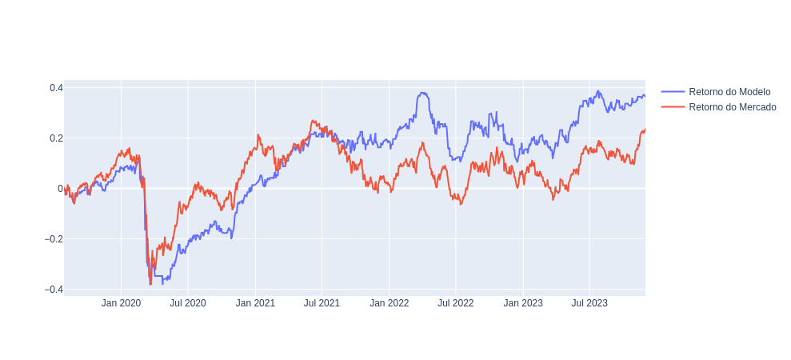

Detecção de Fraude de Crédito
Sabe-se que milhões de transações de crédito são feitas diariamente, sendo apenas algumas delas são fraudulentas.As fraudes, apesar de sua ocorrência relativamente baixa, podem gerar prejuízos enormes para as instituições financeiras.
Essa problemática pode ser resolvida utilizando modelos de aprendizado de máquina. Esses modelos conseguem, a partir de informações específicas de cada transação, prever se a transação será fraudulenta ou não.
O modelo conseguiu prever cerca de 80 fraudes de 95, ou seja, diminuindo cerca de 84% das fraudes. Vale destacar que houve apenas 2 detecções falsas o que contribui ainda mais para economia de gastos da instituições financeira.
Previsão do Índice Ibovespa
O mercado financeiro é afetado diariamente por fatores econômicos, culturais, políticos e aleatórios (catástrofes naturais). Diante dessa grande variação, prever a direção futura do mercado torna-se uma tarefa de extrema dificuldade. Nesse cenário, técnicas estatísticas e matemáticas são comumente utilizadas para previsão de mercado.
Diante dessas técnicas, os modelos de aprendizado de máquina se apresentam como uma das principais ferramentas utilizadas na literatura de predição de movimento de mercados. Neste estudo, foi utilizado o método Random Forest e Support Vector Machine.

O modelo conseguiu superar o retorno do Ibovespa no Longo Prazo, com a utilização de técnicas modernas de validação de modelo e feature engineer. Com apenas a utilização de 8 variáveis independentes o modelo de SVM alcançou um acurácia de 54% e um ROC AUC de 53,5%.